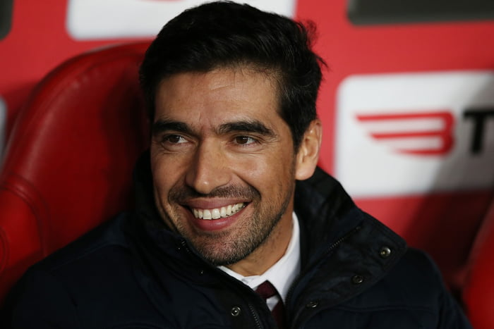
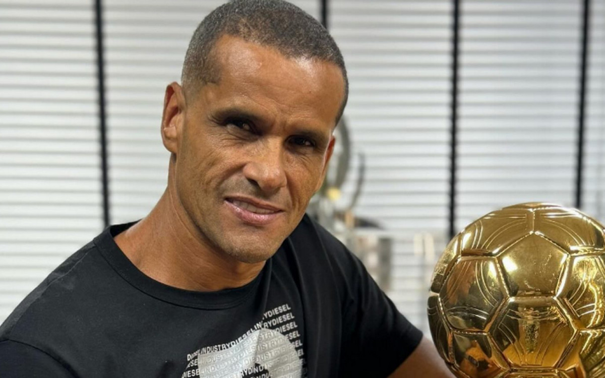

Em uma seleta lista temos alguns Nomes de treinadores estrangeiros que marcaram época em clubes brasileiros
Casos de Sucesso
Nos últimos anos, o futebol brasileiro vive uma transformação significativa com a ascensão de treinadores estrangeiros. Entre os maiores casos de sucesso está Abel Ferreira, técnico português que assumiu o Palmeiras em 2020 e rapidamente se consolidou como um dos mais vitoriosos da história do clube. Sob seu comando, o time conquistou duas Libertadores (2020 e 2021), um Brasileirão (2022), uma Copa do Brasil (2020) e duas Recopas Sul-Americanas, impondo um estilo de jogo moderno e competitivo.
Outro destaque éJuan Pablo Vojvoda, argentino que assumiu o Fortaleza em 2021. Com orçamento limitado, levou o clube a feitos históricos, como a inédita classificação à Libertadores e a final da Copa Sul-Americana em 2023, sendo elogiado pela organização tática e capacidade de extrair o melhor do elenco.
Jorge Jesus, por sua vez, marcou uma era no Flamengo. Em 2019, o português revolucionou o time carioca, conquistando o Brasileirão e a Libertadores com um futebol ofensivo e dominante. Seu impacto foi tão grande que virou referência entre torcedores e profissionais do meio.
Antes deles,Jorge Sampaoli teve passagem marcante pelo Santos em 2019. Com um elenco enxuto, fez campanha surpreendente, ficando em segundo lugar no Brasileirão com um estilo ofensivo e de posse de bola.
Mais recentemente, Arthur Jorge, também português, assumiu o Botafogo em 2024 com grandes expectativas, dando sequência a uma nova fase de investimento e ambição no clube. Foi campeão Brasileiro e da Copa Libertadores em 2024, com uma campanha fantastica que marcou a história do alvinegro carioca com a sua primeira taça Continental.
Mesmo sem títulos, Eduardo Coudet, no Internacional, merece menção. O argentino levou o time à disputa direta do Brasileirão de 2020, implementando um futebol agressivo e sendo valorizado por modernizar o modelo de jogo do clube antes de sair para o Celta de Vigo, da Espanha.
Esses treinadores, com diferentes perfis e metodologias, provocaram mudanças no futebol nacional, incentivando a profissionalização, o estudo e o respeito à continuidade de trabalho, desafiando o modelo de trocas constantes que ainda predomina no Brasil.

Desafios e Fracassos
Nem todos os técnicos estrangeiros obtiveram sucesso. Jesualdo Ferreira (Santos, 2020), Paulo Bento (Cruzeiro, 2016), Vítor Pereira (Flamengo, 2023) e Ricardo Gareca (Palmeiras, 2014) enfrentaram dificuldades de adaptação e resultados insatisfatórios, levando a demissões precoces
Apesar do sucesso de alguns técnicos estrangeiros, muitos enfrentaram grandes desafios e acabaram deixando o Brasil com passagens frustrantes. Aqui estão seis exemplos marcantes:
1. Jesualdo Ferreira (Santos – 2020, Portugal)
Contratado com expectativa de dar continuidade ao estilo ofensivo do clube, Jesualdo não conseguiu se adaptar ao ritmo do futebol brasileiro. Foi eliminado precocemente no Campeonato Paulista e demitido após apenas 15 jogos, com desempenho abaixo do esperado e dificuldades de comunicação com elenco e imprensa.
2. Paulo Bento (Cruzeiro – 2016, Portugal)
Com experiência na seleção portuguesa, chegou com moral, mas não conseguiu bons resultados. Em 17 partidas, somou apenas 6 vitórias. Com o Cruzeiro na zona de rebaixamento do Brasileirão, foi demitido. Sua insistência em um modelo de jogo europeu encontrou resistência interna.
3. Miguel Ángel Ramírez (Internacional – 2021, Espanha)
Chegou com promessa de renovar o estilo do Inter, mas não resistiu à pressão. Foi eliminado pelo Vitória na Copa do Brasil, sofreu goleadas em casa e não conseguiu fazer o time assimilar suas ideias. Durou menos de 5 meses.
4. Vítor Pereira (Corinthians – 2022; Flamengo – 2023, Portugal)
Apesar de momentos competitivos no Corinthians, saiu sem títulos e com críticas por não criar uma identidade clara. No Flamengo, foi ainda pior: perdeu a Supercopa, a Recopa Sul-Americana e o Mundial de Clubes. Foi demitido após pouco mais de três meses.
5. Ricardo Gareca (Palmeiras – 2014, Argentina)
Treinador de renome, não conseguiu adaptar seu estilo ao futebol brasileiro. Em 13 jogos pelo Palmeiras, venceu apenas 4. Teve dificuldades com o elenco e com a pressão externa, sendo demitido após menos de três meses.
6. Domènec Torrent (Flamengo – 2020, Espanha)
Sucessor de Jorge Jesus, não conseguiu manter o mesmo nível. Sofreu goleadas históricas (como o 4x0 para o Atlético-MG e 4x1 para o São Paulo), enfrentou desgaste interno e foi demitido em meio à desorganização tática da equipe.
7. Ariel Holan (Santos – 2021, Argentina)
Campeão da Sul-Americana com o Independiente, chegou com prestígio ao Santos, mas enfrentou crises internas e pressão da torcida. Após maus resultados e atritos com a diretoria, pediu demissão após apenas 12 jogos.
8. Ricardo Sá Pinto (Vasco – 2020, Portugal)
Chegou durante uma fase crítica do clube e não conseguiu tirar o time da zona de rebaixamento. Seu trabalho foi confuso taticamente e não teve sequência. Saiu com o Vasco em crise e próximo do rebaixamento à Série B, o que de fato ocorreu pouco depois.
9. Paulo Bento (Portugal) – Cruzeiro, 2016
Tentou implantar uma nova filosofia no clube, mas sofreu com resultados ruins e foi demitido em meio a protestos da torcida.
10. Ramon Díaz (Argentina) – Vasco, 2023
Pegou o time em situação difícil e até ajudou a evitar o rebaixamento, mas a instabilidade e críticas ao estilo fizeram sua permanência ser contestada e ele acabou saindo em 2024.
Esses casos mostram que, apesar da qualidade técnica, a adaptação ao futebol brasileiro — com sua pressão intensa, calendário apertado e particularidades culturais — continua sendo um grande desafio para técnicos estrangeiros.

Comparativo: Técnicos Brasileiros vs. Estrangeiros
O futebol brasileiro, historicamente reconhecido por sua genialidade técnica e criatividade dentro de campo, tem nos últimos anos vivido uma crescente presença de treinadores estrangeiros, especialmente portugueses e argentinos, nos principais clubes do país,
o que suscita um interessante comparativo entre esses profissionais e os treinadores nacionais.
A formação desses treinadores estrangeiros é uma das primeiras diferenças a ser destacada: portugueses geralmente passam pela renomada Escola Nacional de Treinadores em Portugal, alinhada com os rigorosos padrões da UEFA Pro License, que envolve uma formação acadêmica sólida, com ênfase em metodologias modernas, análise de desempenho, psicologia esportiva e táticas avançadas; já os argentinos, influenciados pela rica tradição futebolística local, são formados em um ambiente que valoriza a intensidade tática, leitura dinâmica de jogo e o futebol de pressão, tendo suas raízes em centros formadores como Newell’s Old Boys e River Plate. Em contraste, os treinadores brasileiros, embora possuam um legado histórico de grandes nomes como Telê Santana, Luiz Felipe Scolari e Vanderlei Luxemburgo, enfrentam críticas quanto à atualização e modernização da formação, já que os cursos da CBF e as instituições brasileiras de formação técnica ainda caminham lentamente em direção à integração de ciência do esporte, análise estatística e inovação tática, algo que países europeus e argentinos incorporam há anos. Caracteristicamente, portugueses trazem um estilo organizado, focado na solidez defensiva e na transição rápida,
como visto em Jorge Jesus e Abel Ferreira, que combinam rigor tático com a capacidade de adaptação e gestão de grupo; argentinos, por sua vez, imprimem um jogo mais agressivo, vertical e de alta intensidade, com forte ênfase na pressão alta e na construção coletiva, refletindo a filosofia de treinadores icônicos como Marcelo Bielsa e Lionel Scaloni. Brasileiros tradicionalmente privilegiaram o talento individual e a improvisação, mas atualmente há uma busca por equilíbrio entre criatividade e organização, ainda que, muitas vezes, com oscilação e falta de continuidade tática. No cenário mundial, portugueses e argentinos alcançaram relevância global mais recentemente e em maior escala do que os brasileiros, que tiveram grande projeção nas décadas de 70 e 80, com técnicos como Cláudio Coutinho e Telê Santana, mas não conseguiram manter esse protagonismo em ligas europeias e seleções internacionais. Portugal se consolidou com nomes como José Mourinho, campeão em diversas ligas top e Champions League, e Rúben Amorim, revelando uma nova geração de técnicos altamente valorizados; a Argentina, além de formar campeões mundiais como Scaloni, exporta treinadores para toda a América Latina e Europa, mantendo uma influência forte, especialmente na América do Sul e na MLS. O Brasil, apesar de ser um celeiro de jogadores, tem dificuldade em exportar seus treinadores, que costumam atuar principalmente no país e em ligas menores, sofrendo com a ausência de reconhecimento e desconfiança externa. No futebol brasileiro, o desempenho dos estrangeiros recentes é notório: Jorge Jesus conquistou o Campeonato Brasileiro e a Copa Libertadores com o Flamengo em 2019, Abel Ferreira levou o Palmeiras ao bicampeonato da Libertadores em 2020 e 2021, enquanto treinadores argentinos como Eduardo Coudet e Jorge Sampaoli mostram projetos de médio prazo com boa repercussão, embora sem títulos tão expressivos ainda. Em contrapartida, os técnicos brasileiros oscilam bastante, com poucos casos de sucesso prolongado; a rotina de demissões e troca constante revela a falta de paciência e estrutura para projetos longos, o que dificulta a construção de equipes consistentes. Dados técnicos apontam que clubes comandados por estrangeiros tiveram, nos últimos cinco anos, médias superiores de pontos por jogo, além de melhor aproveitamento em competições internacionais, reforçando o argumento de que a metodologia aplicada por portugueses e argentinos se adequa melhor aos desafios atuais do futebol brasileiro. Historicamente, a presença estrangeira no futebol do Brasil não é nova, mas o protagonismo atual desses dois países é um fenômeno recente, ligado à globalização do futebol e à troca de conhecimento mais rápida. Além disso, a influência portuguesa no futebol brasileiro vem do passado colonial, facilitando a comunicação e a adaptação, enquanto a proximidade cultural e a semelhança no estilo de jogo aproximam os argentinos. Para o futuro, o desafio brasileiro é atualizar suas estruturas de formação, valorizar o investimento em pesquisa e ciência do futebol e estimular uma mentalidade mais aberta a inovação, aprendendo com os exemplos internacionais sem perder sua identidade. Em resumo, portugueses e argentinos chegam com formação técnica robusta, perfil tático moderno e histórico recente de conquistas e boa adaptação no Brasil e no mundo, enquanto o treinador brasileiro luta para se reinventar em um cenário que exige cada vez mais preparação, análise e capacidade de gerir ambientes complexos. Essa competição saudável pode ser o motor para o futebol nacional voltar a ser referência não só dentro das quatro linhas, mas também no banco de reservas e na elite mundial da preparação técnica.

Formação de Treinadores no Brasil
A formação do treinador brasileiro de futebol é marcada por desafios e um processo em evolução, refletindo tanto as tradições locais quanto a necessidade crescente de atualização diante das demandas do futebol moderno. Historicamente, o Brasil, conhecido mundialmente por sua excelência na produção de jogadores, demorou a estruturar uma formação técnica sólida e padronizada para treinadores. Atualmente, a principal porta de entrada formal para a carreira de treinador no país é o curso de treinador da CBF, homologado pela Confederação Brasileira de Futebol e alinhado com as diretrizes da FIFA. Esse curso oferece níveis progressivos, do nível básico ao profissional (equivalente à licença UEFA Pro), contemplando disciplinas como metodologia do treinamento, preparação física, psicologia esportiva, tática, análise de desempenho e gestão de grupo. No entanto, a qualidade e profundidade desses cursos ainda são alvo de críticas, principalmente pela demora na incorporação de tecnologias avançadas e metodologias modernas, que já são padrão em países europeus.
Além disso, existem faculdades de Educação Física e cursos de pós-graduação em Treinamento Desportivo e Futebol, oferecidos por várias instituições brasileiras. No entanto, esses cursos são mais generalistas e não necessariamente preparam o aluno para os desafios específicos da profissão de treinador, o que exige complementação prática e contínua. Muitos treinadores buscam, então, capacitação no exterior, realizando cursos na Europa, especialmente em Portugal e Espanha, onde a formação é reconhecida pela UEFA e tem alto prestígio mundial. Essa busca por conhecimento internacional tem aumentado, sobretudo após o sucesso de técnicos estrangeiros no futebol brasileiro, que servem de inspiração para a nova geração.
Na base, o Brasil conta com um sistema de formação muito focado nos atletas, com escolinhas, categorias de base e clubes que desenvolvem jogadores desde a infância, mas o mesmo cuidado raramente é dado à formação dos futuros treinadores das categorias menores, que muitas vezes aprendem no dia a dia sem uma formação técnica robusta. Isso resulta em um descompasso na qualidade dos treinadores formados localmente.
Outro fator importante é a questão das oportunidades. O mercado brasileiro ainda é muito volátil e instável para os treinadores, o que dificulta a construção de carreiras sólidas. Muitos profissionais enfrentam contratos curtos, pressões imediatas por resultados e pouca paciência para projetos de longo prazo, o que dificulta o aprendizado e a aplicação de metodologias mais elaboradas. Por isso, muitos treinadores brasileiros acabam buscando oportunidades em clubes menores, ligas internacionais ou mesmo em funções de auxiliar para ganhar experiência.
Em termos de relevância no futebol global, o treinador brasileiro ainda não conseguiu alcançar o mesmo destaque e prestígio de países como Portugal, Espanha, Alemanha ou Argentina, onde técnicos são valorizados e exportados com frequência para as principais ligas do mundo. Embora existam exceções notórias, como Luiz Felipe Scolari e Carlos Alberto Parreira, que conquistaram a Copa do Mundo e tiveram carreiras de sucesso internacional, esses casos são raros e muitas vezes não refletem uma continuidade ou sistema estruturado de formação no Brasil.
Hoje, a valorização da ciência do esporte, do uso de dados e da inovação tática já fazem parte da rotina dos clubes de ponta no Brasil, e a expectativa é que os treinadores nacionais possam se adaptar a essa nova realidade. A busca por atualização, participação em cursos internacionais, o contato com profissionais estrangeiros e a incorporação de tecnologias são caminhos fundamentais para que o treinador brasileiro recupere seu espaço de protagonismo, tanto no cenário nacional quanto no global. Em suma, apesar dos avanços recentes, a formação do treinador brasileiro ainda precisa de melhorias estruturais, maior investimento em capacitação e oportunidades para que o profissional se desenvolva plenamente em um mercado cada vez mais competitivo e globalizado.

Carlo Ancelotti na Seleção – Um gringo no comando do Brasil
A ideia de ver um treinador estrangeiro comandando a Seleção Brasileira sempre dividiu opiniões. Mas agora é real: Carlo Ancelotti, um dos técnicos mais vitoriosos do futebol mundial, vai assumir o nosso time. É o começo de uma nova fase, diferente de tudo o que já vimos por aqui.
O italiano é conhecido por ser tranquilo, inteligente e muito respeitado pelos jogadores. Ele já venceu praticamente tudo que podia na Europa, e agora tem o desafio de conquistar o coração da torcida mais exigente do planeta. Não vai ser fácil, mas se tem alguém com currículo pra isso, é ele.
A chegada do Ancelotti mostra que o Brasil está abrindo a mente. É uma aposta em uma visão mais moderna, com métodos diferentes e talvez até uma nova forma de jogar. O estilo dele é mais tático, mais equilibrado – bem diferente do nosso jeitinho brasileiro de resolver no talento.
Vai funcionar? Ainda não dá pra saber. Mas uma coisa é certa: essa mistura de escola europeia com talento brasileiro promete ser, no mínimo, interessante.

Idolos Contrários
Porém há quem diga que prefereriria um treinador brasileiro, Rivaldo expressou sua opinião nas redes sociais, considerando a ideia de contratar um técnico estrangeiro como uma "falta de respeito" com os treinadores brasileiros. Ele afirmou acreditar que o Brasil possui profissionais capacitados para assumir a Seleção, citando nomes como Rogério Ceni, Fernando Diniz, Cuca, Renato Gaúcho e Dorival Júnior. Cafú Também se mostrou contra um estrangeiro.
Tostão Embora respeite técnicos estrangeiros, defende que o Brasil tenha um treinador nacional que compreenda a cultura local e os jogadores.
Emerson Leão É abertamente contrário a qualquer nome estrangeiro.
Jairzinho Em diversas entrevistas, demonstrou resistência à ideia de um estrangeiro comandar a Seleção, dizendo que "o Brasil precisa resgatar sua própria identidade".
Em entrevista, Carecademonstrou preocupação com a ideia de um estrangeiro no comando, alegando que seria mais justo dar chance a brasileiros.

Conclusão opinativa
Concluir que o técnico brasileiro está em extinção pode parecer um exagero,
mas é inegável que o cenário atual exige uma profunda reflexão e transformação para que essa realidade não se concretize. O futuro do treinador brasileiro depende, acima de tudo, do seu empenho em buscar aperfeiçoamento constante, indo além dos tradicionais cursos da CBF e investindo em formações internacionais reconhecidas, como a UEFA Pro License ou cursos oferecidos por instituições na Europa e América Latina, que trazem novas metodologias e conhecimentos técnicos modernos. Além disso, é fundamental que o treinador mude a postura de troca constante de clubes, construindo projetos sólidos e duradouros que permitam desenvolver estratégias a longo prazo, ao invés de buscar resultados imediatos que raramente consolidam seu trabalho. Contudo, essa evolução não depende só do profissional em si. É imprescindível que haja uma transformação estrutural no futebol brasileiro, com melhores condições de trabalho: campos decentes para treinamento, árbitros qualificados que garantam justiça em campo, diretorias de clubes mais profissionais e responsáveis que proporcionem suporte e estabilidade. Sem essas condições, o treinador está vulnerável a cobranças desmedidas e riscos constantes de demissão, independentemente do seu talento ou dedicação, além disso outro ponto que me incomoda bastantante é, Declarações infelizes feitas por treinadores brasileiros em entrevistas coletivas são, infelizmente, uma constante no futebol nacional e refletem muitas vezes a pressão extrema, o estresse da profissão e a falta de preparo para lidar com a mídia. É comum ver técnicos disparando críticas abertas a jogadores, árbitros, diretoria ou até mesmo à imprensa, de forma impulsiva e pouco estratégica, o que pode prejudicar a imagem do treinador e do próprio clube. Comentários como “time que não tem coragem de jogar não merece estar em campo” ou acusações diretas contra árbitros, sugerindo favorecimento ou incompetência, são exemplos que acabam contaminando o ambiente do futebol. também temos, declarações carregadas de emoção, que revelam insegurança ou frustração, podem comprometer a credibilidade do treinador perante os jogadores e a torcida. Em muitos casos, essas falas geram repercussão negativa e distraem o foco principal, que deveria ser a preparação da equipe e o desempenho em campo. O equilíbrio na comunicação, a inteligência emocional e o preparo para entrevistas são aspectos que muitos técnicos brasileiros ainda precisam desenvolver para evitar desgaste desnecessário e preservar sua autoridade e profissionalismo.. Portanto, para que o técnico brasileiro recupere seu espaço e protagonismo, é preciso um esforço conjunto: a busca por conhecimento e maturidade do próprio treinador e uma reorganização do ambiente em que ele atua. Só assim será possível garantir que o futebol nacional volte a ter sua identidade também fora das quatro linhas, com profissionais preparados, respeitados e valorizados.